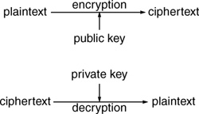
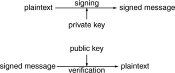
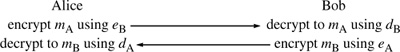
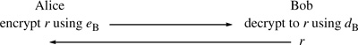

Networking Security Networking Security Networking Security Security Networking Security Networking Security Networking Charlie Kaufman Radia Perlman Mike Speciner Prentice Hall Network Security: Private Communication in a Public World, Second Edition
2.5. Public Key Cryptography
Public key cryptography is sometimes also referred to as asymmetric cryptography. Public key cryptography is a relatively new field, invented in 1975 [DIFF76b] (at least that's the first published recordÂit is rumored that NSA or similar organizations may have discovered this technology earlier). Unlike secret key cryptography, keys are not shared. Instead, each individual has two keys: a private key that need not be revealed to anyone, and a public key that is preferably known to the entire world.
Note that we call the private key a private key and not a secret key. This convention is an attempt to make it clear in any context whether public key cryptography or secret key cryptography is being used. Some people use the term secret key for the private key in public key cryptography, or use the term private key for the secret key in secret key technology. We hope to convince people to use the term secret key only as the single secret number used in secret key cryptography. The term private key should refer to the key in public key cryptography that must not be made public.
Unfortunately, both words public and private begin with p. We will sometimes want a single letter to refer to one of the keys. The letter p won't do. We will use the letter e to refer to the public key, since the public key is used when encrypting a message. We'll use the letter d to refer to the private key, because the private key is used to decrypt a message. Encryption and decryption are two mathematical functions that are inverses of each other.

There is an additional thing one can do with public key technology, which is to generate a digital signature on a message. A digital signature is a number associated with a message, like a

checksum or the MAC described in §2.4.5 Integrity Check. However, unlike a checksum, which can be generated by anyone, a digital signature can only be generated by someone knowing the private key. A public key signature differs from a secret key MAC because verification of a MAC requires knowledge of the same secret as was used to create it. Therefore anyone who can verify a MAC can also generate one, and so be able to substitute a different message and corresponding MAC. In contrast, verification of the signature only requires knowledge of the public key. So Alice can sign a message by generating a signature only she can generate, and other people can verify that it is Alice's signature, but cannot forge her signature. This is called a signature because it shares with handwritten signatures the property that it is possible to recognize a signature as authentic without being able to forge it.
2.5.1. Security Uses of Public Key Cryptography
Public key cryptography can do anything secret key cryptography can do, but the known public key cryptographic algorithms are orders of magnitude slower than the best known secret key cryptographic algorithms and so are usually used together with secret key algorithms. Public key cryptography is very useful because network security based on public key technology tends to be more easily configurable. Public key cryptography might be used in the beginning of communication for authentication and to establish a temporary shared secret key, then the secret key is used to encrypt the remainder of the conversation using secret key technology.
For instance, suppose Alice wants to talk to Bob. She uses his public key to encrypt a secret key, then uses that secret key to encrypt whatever else she wants to send him. Since the secret key is much smaller than the message, using the slow public key cryptography to encrypt the secret key is not that much of a performance hit. Only Bob can decrypt the secret key. He can then communicate using that secret key with whoever sent that message. Notice that given this protocol, Bob does not know that it was Alice who sent the message. This could be fixed by having Alice digitally sign the encrypted secret key using her private key.
Now we'll describe the types of things one might do with public key cryptography.
2.5.2. Transmitting Over an Insecure Channel
Suppose Alice's <public key, private key> pair is <eA, dA>. Suppose Bob's key pair is <eB, dB>. Assume Alice knows Bob's public key, and Bob knows Alice's public key. Actually, accurately learning other people's public keys is one of the biggest challenges in using public key cryptography and will be discussed in detail in Chapter 15 PKI (Public Key Infrastructure). But for now, don't worry about it.

2.5.3. Secure Storage on Insecure Media
This is really the same as what one would do with secret key cryptography. You'd encrypt the data with your public key. Then nobody can decrypt it except you, since decryption will require the use of the private key. For performance reasons, you probably wouldn't encrypt the data directly with the public key, but rather randomly generate a secret key, encrypt the data with that secret key, and encrypt that secret key with the public key. As with secret key technology, if you lose your private key, the data is irretrievably lost. If you are worried about that, you can encrypt an additional copy of the data encryption key under the public key of someone you trust, like your lawyer. Or you can store copies of your private key with someone you trust (see §24.9.1 Key Escrow).
Public key technology has an important advantage over secret key technology for this application. Alice can encrypt a message for Bob without knowing his decryption key.
2.5.4. Authentication
With secret key cryptography, if Alice and Bob want to communicate, they have to share a secret. If Bob wants to be able to prove his identity to lots of entities, then with secret key technology he will need to remember lots of secret keys, one for each entity to which he would like to prove his identity. Possibly he could use the same shared secret with Alice as with Carol, but that has the disadvantage that then Carol and Alice could impersonate Bob to each other.
Public key technology is much more convenient. Bob only needs to remember a single secret, his own private key. It is true that if Bob wants to be able to verify the identity of thousands of entities, then he will need to know (or be able to obtain when necessary) thousands of public keys. In Chapter 15 PKI (Public Key Infrastructure) we discuss how this might be done.
Here's an example of how Alice can use public key cryptography for verifying Bob's identity assuming Alice knows Bob's public key. Alice chooses a random number r, encrypts it using Bob's public key eB, and sends the result to Bob. Bob proves he knows dB by decrypting the message and sending r back to Alice.

Another advantage of public key authentication is that Alice does not need to keep any secret information in order to verify Bob. For instance, Alice might be a computer system in which backup tapes are unencrypted and easily stolen. With secret key based authentication, if Carol stole a backup tape and read the key that Alice shares with Bob, she could then trick Bob into thinking she was Alice (or trick Alice into thinking she was Bob). In contrast, with public key based authentication, the only information on Alice's backup tapes is public key information, and that cannot be used to impersonate Bob.
2.5.5. Digital Signatures
Forged in USA engraved on a screwdriver claiming to be of brand Craftsman
It is often useful to prove that a message was generated by a particular individual. This is easy with public key technology. Bob's signature for a message m can only be generated by someone with knowledge of Bob's private key. And the signature depends on the contents of m. If m is modified in any way, the signature no longer matches. So digital signatures provide two important functions. They prove who generated the information, and they prove that the information has not been modified in any way by anyone since the message and matching signature were generated.
Digital signatures offer an important advantage over secret key based cryptographic MACsÂnon-repudiation. Suppose Bob sells widgets and Alice routinely buys them. Alice and Bob might agree that rather than placing orders through the mail with signed purchase orders, Alice will send electronic mail messages to order widgets. To protect against someone forging orders and causing Bob to manufacture more widgets than Alice actually needs, Alice will include a message integrity code on her messages. This could be either a secret key based MAC or a public key based signature. But suppose sometime after Alice places a big order, she changes her mind (the bottom fell out of the widget market). Since there's a big penalty for canceling an order, she doesn't fess up that she's canceling, but instead denies that she ever placed the order. Bob sues. If Alice authenticated the message by computing a MAC based on a key she shares with Bob, Bob knows Alice really placed the order because nobody other than Bob and Alice know that key. If Bob knows he didn't create the message he knows it must have been Alice. But he can't prove it to anyone! Since he knows the same secret key that Alice used to sign the order, he could have forged the signature on the message himself and he can't prove to the judge that he didn't! If it was a public key signature, he can show the signed message to the judge and the judge can verify that it was signed with Alice's key. Alice can still claim of course that someone must have stolen and misused her key (it might even be true!), but the contract between Alice and Bob could reasonably hold her responsible for damages caused by her inadequately protecting her key. Unlike secret key cryptography, where the keys are shared, you can always tell who's responsible for a signature generated with a private key.
|